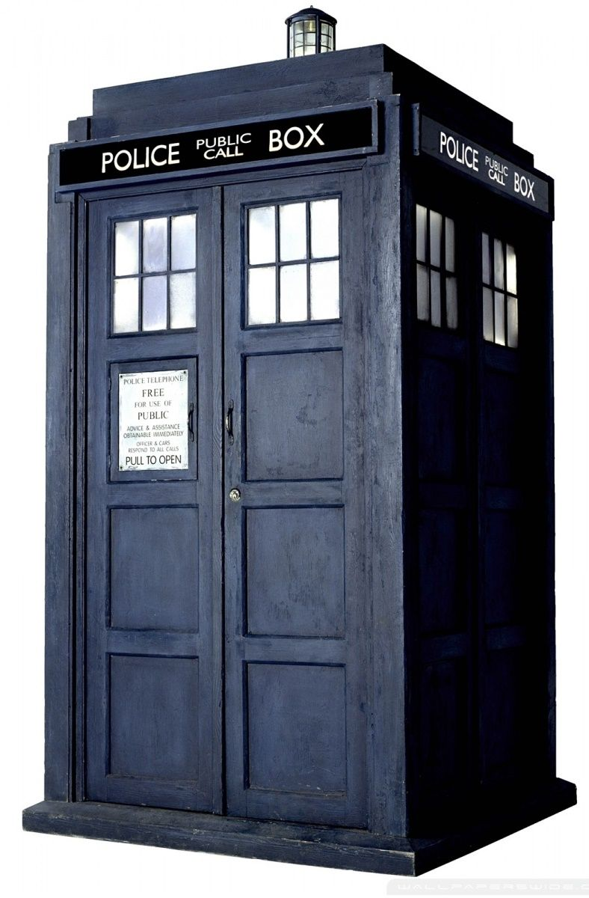
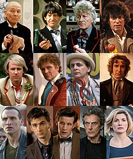
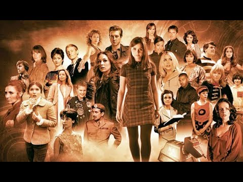
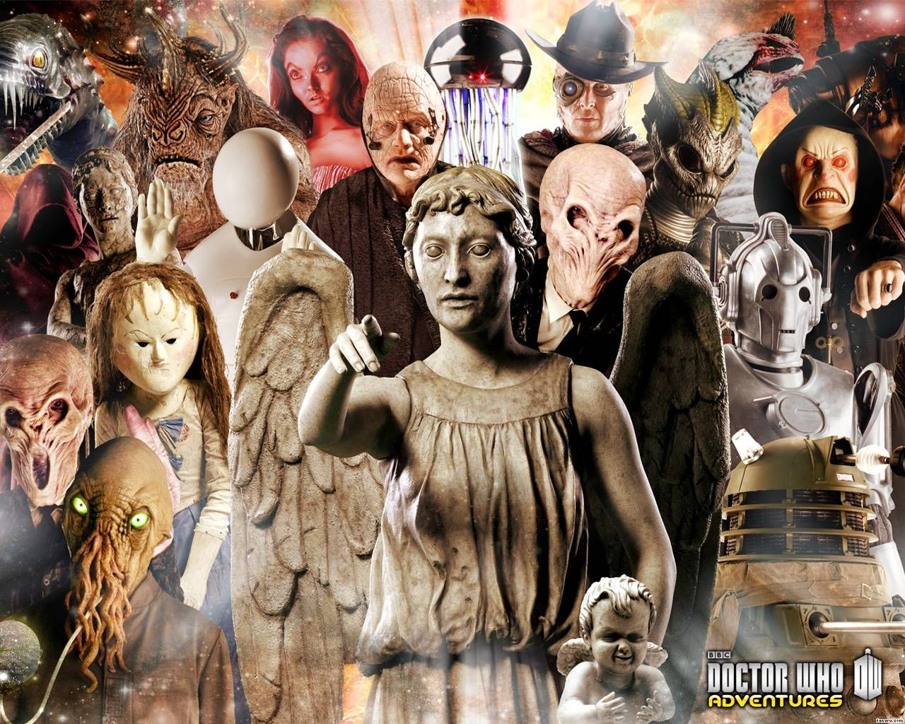
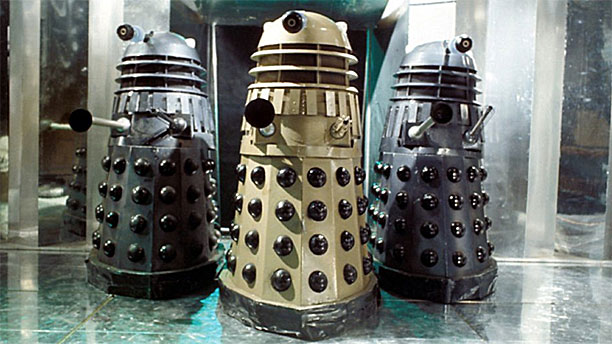
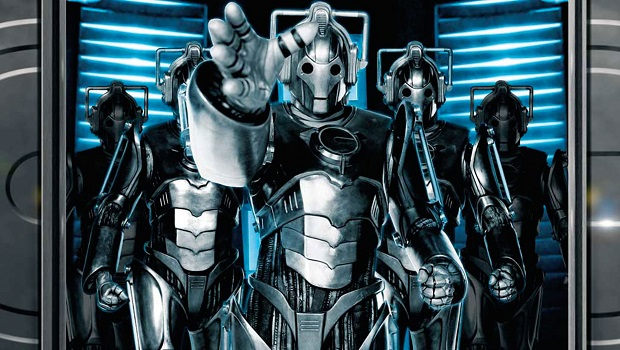
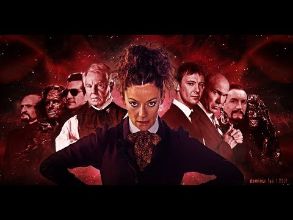

"When the wind stands fair and the night is perfect, when you least expect it but always when you need it the most... There is a Song."
Doctor Who
Doctor Who (Türkçe: Doktor Kim), 1963 yılından beri yayınlanan BBC yapımı Britanya bilimkurgu televizyon dizisi.
Dizi; Doktor olarak bilinen, zamanda yolculuk yapan insansı dünya dışı yaratık olan bir Zaman Lordu'nun maceralarını anlatmaktadır.
Doktor, dışarıdan 1950'lerden kalma bir polis kulübesi gibi görünen TARDIS adındaki bilince sahip ve zamanda yolculuk edebilen bir uzay gemisi ile
evreni araştırır. Yol arkadaşları ile beraber uzay ve zamanı keşfeder, sorunları çözer, yaratıklarla yüzleşir ve tarihe yapılan müdahalelere engel olur.
Doctor Who, ana karakter olan Gallifrey gezegeninden, adının "Doktor olduğunu söyleyen serseri bir Zaman Lordu'nun maceralarını anlatmaktadır.
Mark I tip 40 model bir TARDIS'le gezegeninden kaçıp uzay ve zamanda yolculuk yapmaya başlamıştır. Normalde "bukalemun devresi" olan TARDIS,
gittiği yerle uyumlu bir nesneye dönüşmektedir. Ancak, Doktor'un TARDIS'inde bu devre bozulduğu için son şeklini aldığı polis kulübesi olarak kalmıştır.
Doktor, nadiren yalnız ve genelde bir veya daha fazla yol arkadaşıyla yolculuk yapmaktadır. Genelde insan olan yol arkadaşlarını hayranlık duyduğu Dünya'dan bulmaktadır.
Çoğu zaman merakları onları olaylara götürmekte ve beraber masum insanlara zarar veren veya tarihi değiştirmeye çalışan şeytani güçlere karşı savaşmaktadırlar.
Doktor, marifetlerini ve çok yönlü sonik tornavidası gibi en düşük kaynaklarını kullanarak bu olaylardan sıyrılmaktadır.
Bir Zaman Lordu olarak Doktor, ölümcül bir yara aldığında rejenerasyon geçirip yeni bir vücuda ve kişiliğe sahip olmaktadır.
Doktor, yaptığı yolculuklarda karşısında gelen Dalekler, Siberler ve hain bir zaman Lordu olan Usta'nın olduğu düşmanlara karşı hep kazanmıştır.
Karakterler
Doktor
Doktor
Oyuncu
Dönem
Birinci Doktor
William Hartnell
1963-66
İkinci Doktor
Patrick Troughton
1966-69
Üçüncü Doktor
Jon Pertwee
1970-74
Dördüncü Doktor
Tom Baker
1974-81
Beşinci Doktor
Peter Davison
1982-84
Altıncı Doktor
Colin Baker
1984-86
Yedinci Doktor
Sylvester McCoy
1987-89
Sekizinci Doktor
Paul McGann
1996
Savaş Doktoru
John Hurt
?
Dokuzuncu Doktor
Christopher Eccleston
2005
Onuncu Doktor
David Tennant
2005-10
On Birinci Doktor
Matt Smith
2010-13
On İkinci Doktor
Peter Capaldi
2014-17
On Üçüncü Doktor
Jodie Whittaker
2018-Günümüz
 Doktor karakteri başlangıçta bir gizemle örtülüydü. Dizinin ilk günlerinde
onun hakkında bilinen her şey, "TARDIS" (time and relative dimension(s) in space sözcüklerinin kısaltması) adlı, içeriden daha büyük görünen ("boyutsal aşkınlık"
olarak adlandırılan bir kalite) bir zaman makinesi ile zaman ve mekânı araştırırken adaletsizlikle mücadele eden çok zeki ilginç bir uzaylı olduğuydu.
Başlangıçta çabuk kızan ve biraz kötü niyetli biri olan Doktor hızla daha merhametli bir figüre dönüştü. En sonunda Gallifrey adlı gezegenden, kendi halkından kaçan bir Zaman Lordu olduğu ortaya çıktı.
Evreni görmek için TARDIS'i çalmış ve seyahet etmeye başlamıştır. Zamanla tanıştığı insanlarla arkadaş olmuş, onlarla beraber seyahat etmiştir.
Doktor Değişiklikleri
Yapımcılar, ana karakterin yeniden düzenlenmesi için rejenerasyon kavramını getirdi. Bu, ilk başrol William Hartnell'ın sağlık sorunlarından dolayı hızlıca verilen bir karardı.
Aslında "rejenerasyon" terimi, Doktor'un üçüncü rejenerasyonuna kadar kullanılmamıştı. Hartnell'ın Doktor'u, sadece "yenilenme" sürecinde olduğunu açıklamış ve İkinci Doktor bir
"görünüm değişikliği" geçirmişti. Rejenerasyon fikri, dizinin tarihi boyunca oyuncuların Doktor'u tekrar canlandırmasına ve Doktor'un göreceli geçmişi veya geleceğinden gelen
alternatif Doktorların tasvir edilmesine izin verdi.
Daha sonra The Deadly Assassin, Mawdryn Undead hikâyelerinde ve 1996 televizyon filminde, bir zaman lordunun yalnızca
12 kez rejenerasyon geçirebildiği, dolayısıyla toplam 13 yüzü olduğu belirtilecekti. Sıklıkla tekrarlanmamasına rağmen bu çizgi toplum bilincinde çakılı kaldı ve yapımcılar tarafından
Doktor'un on üçüncü kez rejenerasyon geçirmesine engel konmuş oldu. Dizinin gidişatına göre On Birinci Doktor'un aslında on ikinci rejenerasyon olması nedeniyle "The Time of the Doctor"
bölümünde Doktor'un yeni bir rejenerasyon döngüsü alma konusu işlendi. Böylelikle On Birinci Doktor, ikinci döngünün ilk Doktor'u oldu.
1986 yılında Newman'ın, 2008 yılında Davies'in
de bulunduğu Doktor'u bir kadının canlandırması fikri ortaya atılsa da bugüne kadarki tüm rolleri erkek oyuncular oynadı. 2017 Noel özel bölümünde On Üçüncü Doktor rolüyle bu rolü devralan
Jodie Whittaker, dizinin tarihinde Doktor rolünü oynayacak ilk kadın oldu. İlk bölümlerden beri Zaman Lordlarının cinsiyet değiştirebilmesinden bahsedilse de, bu ilk kez Michelle Gomez'in Usta rolüyle gerçekleşti.
Yol Arkadaşları
 Yol arkadaşı figürü - genelde insan - 1963 yılında Doctor Who dizisi
başladığından beri değişmez bir özellik oldu. Başından beri yol arkadaşının rollerinden biri Doktor'a "ahlakî görevini" hatırlatmaktı.Doktor'un ekranda görünen ilk yol arkadaşları, torunu Susan Foreman
(Carole Ann Ford) ve Susan'ın öğretmenleri Barbara Wright (Jacqueline Hill) ile Ian Chesterton'dı (William Russell). Bu karakterlerin izleyicileri temsil etmesi amaçlanmıştı ve bu yolla izleyiciler,
gizemli bir baba figürü olan Doktor hakkında bilgiler keşfedecekti. Klasik seride Doktor, sadece The Deadly Assassin hikâyesinde yalnız yolculuk yaptı. Yol arkadaşları önemli ölçüde, seyircinin
kimliğini belirleyebileceği bir figür olmuş, Doktor'dan açıklamalar isteyerek ve Doktor'un önüne çıkan problemleri çözebilmesi için büyük katkı yaparak hikâyelerin ilerlemesini sağlamıştır. Doktor, düzenli
olarak yeni yol arkadaşları kazanırken eskilerini kaybetmiştir. Bazıları evine dönmüş, bazıları farklı sebeplerle (aşkını bulmak gibi) ayrılmıştır. Bazıları dizinin gidişatına göre ölmüştür. Bu karakterler
genelde insan veya insansı uzaylılar olmuştur.
Bazı yol arkadaşları ana dizide olduğu kadar yan dizilerde de ortaya çıkmaya başlamıştır. Sarah Jane Smith, 2006 yılında dizide bir bölümde oynadıktan
sonra The Sarah Jane Adventures (2007-11) yan dizisinin ana karakteri olmuştur. Dizide eski yol arkadaşları Jo Grant, K-9 ve Tuğgeneral Lethbridge-Stewart (Nicholas Courtney) da görünmüştür. Ayrıca, Jack Harkness
Torchwood (2006-11) yan dizisine zemin hazırlarken Martha Jones da bu dizide yer almıştır.
Düşmanlar
 Sydney Newman, diziyi kabul ettiğinde özellikle bilimkurgu yapımlarında
"patlak gözlü canavar" istemediğini söyledi. Ancak, canavarlar seyircinin daha çok ilgisini çekti ve neredeyse başından beri Doctor Who dizisinin başlıca ögeleri oldu.
2005 yılında yeniden
başlatılan dizide yürütücü yapımcı Russell T Davies, klasik serinin simgeleşmiş ögelerini yeniden kullanmaya niyetli olduğunu belirtti. Birinci sezonda Nestene Bilinci ile Autonlar ve
Dalekler, ikinci sezonda Siberler, üçüncü sezonda Macra ve Usta, dördüncü sezonda Sontaranlar ve Davros, 2009-10 özel bölümlerinde Rassilon'un
da aralarında olduğu Zaman Lordları geri döndü. Davies'in görevini devralan Steven Moffat bunu devam ettirdi; beşinci sezonda Silurianlar, altıncı sezonda Cybermat'ler,
yedinci sezonda Büyük Zeka ve Buz Savaşçıları ve 50. yıla özel bölümde Zygonlar dönüş yaptı. Ayrıca modern seride yeni uzaylı olarak Slitheen (Raxacoricofallapatoris'lu),
Ood, Judoon, Ağlayan Melekler ve Sessizlik tasarlandı.
Nadir görülen Buz Savaşçıları, Ogronlar, Rani ve Siyah Gardiyan dışında özellikle
üç düşman ikon hâline geldi: Dalekler, Siberler ve Usta.
Dalekler
 Dalek ırkı, ilk kez 1963 yılında dizinin ikinci hikâyesinde göründü,
dolayısıyla Doctor Who'nun en eski düşmanları oldu. Dalekler, Skaro gezegeninden Kaledlerin bilim adamı Davros tarafından mutantlaştırılmasıyla oluştu ve hareket kabiliyetlerinin olması için
mekanik zırh kabuklarına yerleştirildi. Gerçekte büyük beyinleriyle ahtapot benzeri olan bu canlılar, tek bir göz sapına sahip, lavabo pompası görünümünde bir el ve yönlendirilmiş el silahı
olarak başka bir ele sahip zırhların içindedir. Daleklerin en zayıf noktası gözleridir. Silahlarla gözüne vurulduğunda Dalekler kör olup aklını kaçırmaktadır. Anlık olarak tanınabilen metalik
sesleriyle "exterminate" (yok et) diyen bu canavarların tek amacı Dalek olmayan tüm varlıkları öldürmektir. 50. yıla özel bölümde de görüldüğü gibi Zaman Savaşı'nda Zaman Lordlarına da
saldırmışlardır. Doctor Who'da sıklıkla ortaya çıkan Dalekler, en son 2015 yılında yayınlanan "The Witch's Familiar" ve "Hell Bent" bölümlerinde görünmüştür.
Cybermen(Siber Adamlar)
Siberler ilk kez, Dünya'nın ikiz gezegeni olan Mondas gezegeninden
tamamen insan kökenli olarak tanıtıldı. Bu insanlar vücutlarına gittikçe artan yapay parçalar yerleştirmeye başladılar. Bu ırkın yaptığı mantıksız hesaplamalar cyborglara dönüşmelerine yol açtı
ve duygusu olmayan bir robot hâline geldiler. Mondas'ın çöküşüyle birlikte Telos'u yeni gezegen olarak edindiler. Siberler, dizide sıklıkla dönüş yapan yaratıklardan oldu.
2006 yılında
yayınlanan ikinci sezonda Siberler tamamıyla yenilendi. Paralel evrende Cybus şirketinin sahibi ve deli bir mucit olan John Lumic, Siber zırhlarını yaptı. İnsanları, bu güçlü metal gövdelere
beyinlerini nakletmek için korumaya çalışıyordu. Onlara bir cep telefonu ağı kullanarak emir veriyor ve onların duygularını kulaklarındaki elektronik bir çiple önlüyordu.
Usta
Evreni yönetmek isteyen Usta, Doktor'un baş düşmanı ve hain bir Zaman Lordudur.
Doktor, Sherlock Holmes; Usta, Profesör Moriarty olarak düşünülmüştür. Karakter, ilk kez 1971 yılında görünmüştür. Doktor'da da olduğu gibi, Usta rejenerasyon geçirebildiğinden onu da birçok oyuncu
oynamıştır. Bu rolü oynayan ilk oyuncu 1973 yılında ölümüne kadar Roger Delgado olmuştur. Kısa süre Peter Pratt ve Geoffrey Beevers'ın da oynadığı bu rolü klasik serinin sonuna kadar Anthony Ainley
oynamıştır. 1996 yılında yayınlanan televizyon filminde Usta rolünü Amerikalı oyuncu Eric Roberts oynamıştır.
2005 yılında başlayan modern serinin ilk Usta'sı "Utopia" bölümünde görünmüş ve
Usta'yı Derek Jacobi oynamıştır. Rejenerasyonu sonrası rolü devralan John Simm, birkaç kez Onuncu Doktor'un bölümlerinde görünmüştür. 2014 yılında yayınlanan "Dark Water" bölümünde "Hanım" (İngilizcesi
"Missy", Usta'nın İngilizcesi Master'ın dişi versiyonu olarak Mistress'ın kısaltması) olarak "Zaman Leydisi" görünümünde ortaya çıkmıştır. Usta'nın bu yüzünü Michelle Gomez oynamıştır.